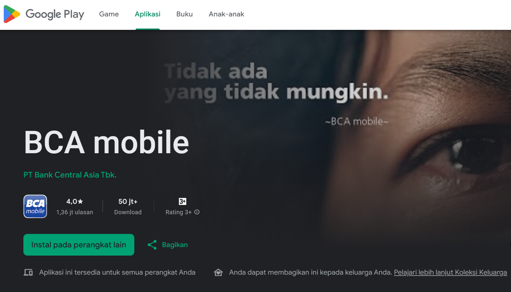
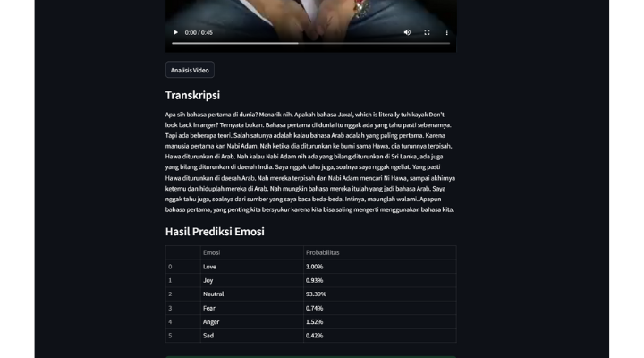
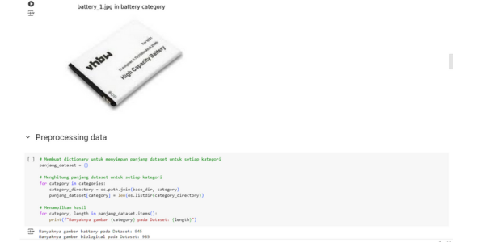
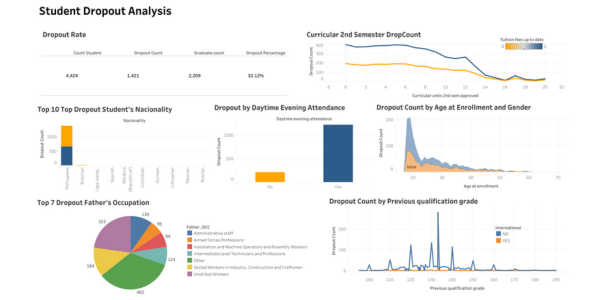
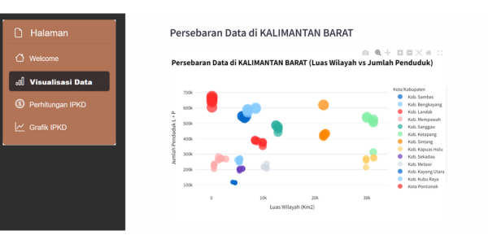

Preview
Fashion Recommendation System
Built a product recommendation system for fashion e-commerce using content-based filtering and collaborative approaches to suggest more relevant products.
Extended portfolio
A richer archive of machine learning, data storytelling, and applied AI work—each one designed to show the thinking behind the result.
01 / Portfolio archive
These are companion projects from my learning and experimentation journey—each one solving a small but meaningful problem with data and AI.
Built a product recommendation system for fashion e-commerce using content-based filtering and collaborative approaches to suggest more relevant products.

PreviewAnalyzed 144,000 Google Play reviews for BCA Mobile and compared multiple deep-learning models to determine the strongest sentiment classifier.

PreviewUsed transformers and speech-to-text workflows for emotion analytics from audio and text, combining NLP with multimodal inputs.
Combined unsupervised clustering and supervised classification to detect suspicious bank transactions and segment customer behavior patterns.

PreviewCombined IoT sensors and computer vision to monitor hydroponic environments and detect plant health issues using image-based analysis.

PreviewAnalyzed employee churn patterns and built a random forest model to predict attrition risk and visualize the main drivers behind turnover.

PreviewPredicted and analyzed dropout risk among students by identifying the highest-impact factors and using model-based insight to support intervention strategies.